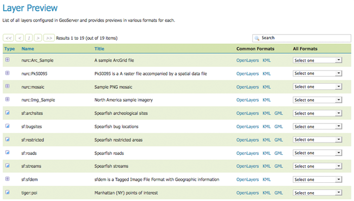

Quickstart¶
주석
사용자 로컬 환경에서 GeoServer를 운영하는 경우 일반적으로 GEOSERVER_URL은 http://localhost:8080/geoserver 입니다.
Viewing a layer¶
GeoServer를 설치하고 실행한 다음 웹 브라우저를 열고 웹 관리자 콘솔(Interface basics)로 이동하십시오. 왼쪽 사이드 메뉴의 레이어 프리뷰 링크를 클릭해서 Layer Preview로 이동합니다. 현재 사용자 GeoServer에 설정된 레이어 목록을 볼 수 있습니다. topp:states라는 행을 찾으십시오. 해당 레이어 오른쪽에 있는 KML이라는 링크를 클릭합니다.
맵 프리뷰 페이지
사용자 컴퓨터에 Google 어스를 올바로 설치했다면 어떻게 파일을 열 것인지 묻는 대화창이 뜰 것입니다. Open with Google Earth를 클릭하십시오.

Google 어스로 열기
Google Earth가 데이터를 다 읽어들이면 다음과 유사한 화면을 볼 수 있습니다.

Google 어스로 렌더링된 topp:states 레이어
Direct access to KML¶
설정된 모든 FeatureTypes을 KML로 출력(해서 Google 어스가 읽어들이도록)할 수 있습니다. KML에 대한 URL 구조는 다음과 같습니다.
http://GEOSERVER_URL/wms/kml?layers=<layername>
예를 들어 topp:states 레이어의 URL은 다음과 같습니다.
http://GEOSERVER_URL/wms/kml?layers=topp:states
Adding a Network Link¶
KML을 Google 어스에 직접 서비스하는 또다른 방법은 네트워크 링크(Network Link)를 이용하는 것입니다. 네트워크 링크를 통해 Google 어스와 더 잘 통합할 수 있습니다. 예를 들어 네트워크 링크를 이용하면 사용자가 URL을 다시 입력하거나 GeoServer의 맵 프리뷰 페이지의 링크를 다시 클릭할 필요 없이 Google 어스 내에서 데이터를 새로고침(refresh)할 수 있습니다.
네트워크 링크를 추가하려면 Add 메뉴를 클릭해서 Network Link를 선택하십시오. New Network Link 대화창이 뜰 것입니다. Name 항목에 사용자 레이어의 명칭을 입력하십시오. (Google 어스 메인 화면 상의 My Places에 표출되는 명칭입니다.) Link 항목을 다음과 같이 설정합니다.
http://GEOSERVER_URL/wms/kml?layers=topp:states
(GEOSERVER_URL 자리에 실제 URL을 입력해야 합니다.) OK를 클릭하십시오. 이제 해당 레이어를 My Places에 저장했습니다.
네트워크 링크 추가하기
더 자세한 정보를 알고 싶다면 Tutorials와 KML Styling 섹션도 참조하십시오.